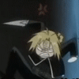
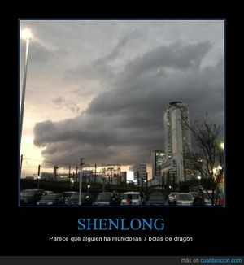

Dragonball Evolution
 De: La Frikipedia, la enciclopedia extremadamente seria.
De: La Frikipedia, la enciclopedia extremadamente seria.
De la serie cine para todos:
Mierda DragonBall Evolution
| Director
|
Un destructor de infancias profesional que no vio Dragon Ball.
|
| Productor
|
Justin bieber
|
| Actores
|
Un grupo de ratardados que ni se parecen a los de la serie
|
| País
|
el oyo de la concha de tu madre osea U.S.A
|
| Año
|
2008
|
| Presupuesto
|
Ni 5 centavos
|
| Secuelas
|
Esperemos que nunca
|
«Siiiiiiiiii esta es la mejor pelicula de mundoooooooo te amo FOX»
~ La nada en su maximo explendor
«Primero el reggeton, luego Justin Gayber y ahora esto»
~ Jesus revolcandose en su "misteriosa" tumba
«ahh.. ohh... cuanto dolor!! DUELE! DUELEEEEE!»
~ Goku siendo destrozado a golpes por chicos normales del cole.... (?)
«O dios Krilin ya se murio»
~ el director de esta pelicula cuando encontro a krilin
Dragón Ball Evolution es una pelicula porno live action de la famosa serie Dragon Ball echa por un grupo de frikis sin vida social que nunca vieron dragón ball por la Censury Fox en el año 2008. en la película se aseguraron de destruir cada pedasito de el corazon de todos los amantes de Dragon ball, en esta version podras ver un picoro amarillo y metrosexual, a un yamcha cani, un Maestro Roshi joven con pelo, una Bulma poco puta, un Krilin... espera... ¿Y Krilin? y un goku... un poco blasfemo.
Como surgio la pelicula
Esta pelicula en realidad surgio de una pelicula de reggaeton con una penosa interpretacion de quienes son los chinos japos y asiaticos en general, pero al ver que un shampoo para las neuronas no podian hacer la pelicula, por lo que desepcionaron a nadie importante millones de canis y reggetoneros en todo el mundo, por lo que pensaron en algo mas popular que eso y se dieron cuenta que los jotakus eran mas que ellos por lo que compraron death note dragon ball.
reaccion al ver la pelicula
Idea de la pelicula
Despues de que se comprara dragon ball y death note para mas tarde pensaron que ya tenian la carnada para que miles de personas lo vean pero no iba a funcionar en los canis ya que no tuvieron mucha infancia por lo que decidieron lanzar la mierda pelicula con una historia inventada para el interés de los canis ya que pensaron que al ser Dragon ball iban ya por defecto a comprar cualquier mierda, de echo la peli no solo fue para canis, fue dirigida por ellos y un grupito de frikis de la censury zorra Fox(en conclusión, ya sabemos porque salió esta mierda)
Sipnosis
Nos cuenta la historia de Goku un friki con problemas hormonales , muy alzado con las chicas que va al colegio .
Un día goku está entrenando con su abuelo que "misteriosamente no murió" tratando de aprender la bola de hielo de Sony Spin) pero igual el maestro roshi lo cago dandole el 0,00000000000000000000000000000000000000000000000000000 de las acciones de un consolador creado por Bulma de un invento, ahí los 4 estuvieron haciendo pendejadas, goku después se dio cuenta que una compañera suya "Chi-Chi" (Milk) entrenaba en el dojo de el maestro Amor, en donde los 2 tuvieron sexo desenfrenado entrenaron y aprendieron el Kame Hame Ha, (adelantaremos la sipnosis un poquito), después hubo romance a pesar de que Dragon ball tenia menos romance que Justin Gayber Bieber con una fan de su dudosa música, ademas de comentarios estúpidos echos por los frikis ya que ellos como no tenian novia querian hacer la peli PrOn pero los de la censury fox no los dejaron, pero los comentario que iva a empesar con el rollo se dejaron intactos, tras eso, después apareció Piccoro que se choreo las esferas del dragon por lo cual Goku se enojó y peleo a lo pendejo y final el bicharraco amarillo verde mató al Maestro Roshi, después buscaron las esferas del dragón y Goku le pidió que reviva al maestro Roshi (El muy cabrón no sabia que se podía a revivir a mucha gente con solo un deseo) y fin.

Otra reaccion de muchos al ver esta mierda.
Actores
| Personaje del Manga |
Actor
|
| Pikoro |
El vampiro Spike de Buffy
|
| Goku |
Pendejo desconocido hijo de Tom Cruise en La Guerra de los Mundos
|
| Bulma |
Flogger que canta en ese bodrio de El Fantasma de la Opera
|
| Chi-Chi (Milk) |
Coreana puta
|
| Yamcha |
Rapero coreano anabolizado con esteroides
|
| Mai |
Japonesa puta
|
| Gohan (abuelo de Goku) |
Randall Duk Kim AKA El Cerrajero de Matrix
|
| Ozaru |
Magilla Gorilla
|
| Shenlong |
El Lagarto Juancho
|
| Oolong |
Iba a ser Porky Pig pero no aparece
|
| Krilin |
Insultante: tampoco aparece (murió otra vez pero el Shenlong cutre de la peli no puede revivirlo)
|
Criticas
La película según su macabro productor arruina infancias recibió criticas tanto buenas como malas...
Las malas
- Todos se enojaron al ver que la historia de dragon ball cambio por completo.
- Todos lloraron la ausencia de Krilin, el director malo dijo que quizás murió o estaba de parranda...
- A nadie le gusto que el Maestro roshi viviera en medio de la ciudad, que tenga cabello, no tenga barba, no este la tortuga, es menor de 65 años, no es tan pervertido,
Es tremendo marika, y tiene que hacer un bailecito Gay antes de hacer un puto Kame-Hame HA, pero este personaje recibió pocas criticas.
- El templo donde el maestro roshi se entreno para aprender el Kame-Hame HA junto al maestro karin... pues... esta también en la
Puta ciudad, y no, no esta en el cielo sobre una enorme torre. El maestro karin no vive solo ni fabrica semillas del ermitaño, y no, no es un gato, ni un ermitaño, ES UN NEGRO! un viejo negro que quiere hacerle creer a la gente que es chino dejándose crecer la barba como la de el maestro roshi original(en esta versión se llama "maestro Kanin") al parecer no guarda mucho respeto a roshi ya que al parecer se tiro a sus hijas y nietas era muy aweoneao y no creía mucho en las cosas que practicaban los viejos pros en el templo (típico noob)
- Piccoro es amarillo, grande, raro, gay, Se la pasa con una tipa que tiene las tetas casi afuera con la que no se sabe de ninguna manera como llego a entablar amistad con ella cuando se supone que venia a destruir a los humanos (?) pero en ningún momento le mira las tetas ni la toca ni nada, es como si fuera su sirvienta gorda, pero la tipa de echo esta buena, por lo que suponemos que este piccoro es gay, el original ya sabemos que era amiguito especial de bulma cuando jodieron a freezer... Usa un traje mas moderno que la Matrix y parece que no hay un
puto Kami-sama.
- El abuelito de goku esta vivo.
- Milk (chi-chi) vive en la ciudad, es mas puta que una gallina y medio lesbiana también, su papa no es Ock-Satan si no un multi-mega-billonario con el ki mas bajo de los humanos, es la chica popular del cole, y se enamora de goku por que le dio lastima por lo gay, débil, estúpido, fracasado, imbécil, retrasado mental, inmaduro, hijo de puta, chupapijas y desgraciado que se veía, al contrario de lo que ocurre en la serie original.
- No existe el budokai... ?
- Goku va al colegio... ?
- bulma no es tan puta... ?
- Bulma usa consoladores en lugar de capsulas... ?
- Shen-long es dorado y pequeño... ?
- Goku es fan de green day y otras bandas como pxndx... ????????????????????
- Yancha es cani y puar no existe, no le tiene miedo a las mujeres y lo mas increible puede ganarle una pelea a alguien en la peli... ???
- si Kame significa tortuga entonces no hay razón para que este Kame-hame HA se llame Kame-hame HA ya que no sale una puta tortuga en la puta película.
- Las esferas del dragon son bolas de plastico rellenas con Hagua escarcha y una luciernaga.
- Arale no existe, lo cual hizo llorar a sus fans quienes se habian llevado un dos royos de papel higiénico y guantes de latex al cine .
-
te chin gan TEn shin han y chaos fueron abortados o Martty Mcflly mato a sus padres antes de que se conocieran...
- Goku cayo desde un meteorito y no en una nave, y solo se transforma con la luna roja y no, no en un mono gigante, en un monito trasvesti que salio pa absolutamente nah en la pelicula.
- Goku es inteligente.......................??????????????????????????????????????????????????????????????????
Las buenas
¿Sabias que...
- ...Goku sufre de bullying en esta peli?
- ...Goku es débil.
- ...Goku no obtiene su gloria matutina de
hacer tiernamente el amor violar salvajemente a bulma mientras esta duerme.
- ...Bulma no es tan puta?
- ...pero Milk (Chi-Chi) es una completa zorra amante a los gan-bangs?
- ...Goku no tiene cola?
- ...y cayo de un meteorito?
- ...y es un tragalibros?
- ...igual que tu?
- ...un wombat muerto puede contra goku?
- ...[[Goku se parece mas a Death note
- ...yamcha es cani, reguetonero, criminal, malandro, choro, conchuo, o como le digan a los criminales regetoniaos en tu país?
- ...te pareces a yamcha?
- ...justin bieber produjo esta peli
porno gay por que como su en infancia lo mas masculino que vio fue barney hasta los 11 años y luego solo veía relitichous quería destruir tambien nuestra infancia al hacer gays a estos personajes que tanto amamos?
- ...hugo chavez hace el papel de uno de los engendros malvados de pikoro, y le gusto tanto que se quedo siendo malo en vida real?
 Otra reaccion de muchos al ver esta mierda.
- ... A Oolong lo hicieron al carbon en navidad y por eso no esta en la peli?
- ...El huevón que hace el papel de el Maestro Roshi es tan joven que podria hace el papel de Ash ketshu-heinz?
- ...peloconcha es mas blanco que el que hace el papel de el maestro karin?
- ...el gato de stuard little hubiera quedado mejor?
- ...Goku y Son Gohan viven en tremenda casota y en ella tienen hasta una puta guitarra?
- ... y un afiche de green day?
- ...Goku es homo?
- ...y Tu tambien?
- ...Pikoro sufre de SIDA despues de la tranfusion en la pelicula?
- ...Es la favorita de Justin Gayber?
- ...Despues de ver la pelicula el papa, decidio aprobar el aborto?
- ...Hace ver mas sexy a bebecito emoxito?
- ...El director es el mismo que el de destino final 3?
Curiosidades
 El Shen Long de la
vida real es mil veces mas creíble que el adefesio que sale en la película.
- Nadie que participo en la película vio dragon ball.
- Nadie entre los personajes sufre de el síndrome de Dragon Ball, aunque el maestro roshi si tiene uno de los síntomas.
- Justin bieber, productor de esta película, sabe tanto sobre dragon ball tanto como un wombat sabe ser amigable.
- Se nota que la pelicula es gay con nada mas ver el afiche de Green day en el cuarto de goku.
- Se supone que estan en el futuro o algo así, pero hay un afiche de green day... son inmortales?
- Bulma no lo hace con goku por la esfera.
- Cuando al director maldito le preguntaron que cual era su parte favorita de dragon ball respondió que la parte en la que Matsuda le dispara a Luffy para acabar con el reinado de lelouch de el mundo de los mamodo...
- A nadie le gusto esta película.
- A excepción de la FOX.
- Chuck Norris no aprueba esta película.
- Las personas comentaron que al verla sentían que un agujero negro se tragaba su alma y su corazón y que Chuck Norris le pateara las bolas.
Autor(es):
- Fordus
- Mad Max
- Metalchukles
- Shadowmura
- Likan003
- Jaken95
- Naranjas moradas
- Elmierda.crr
- Nerox8
- Nahuel Gonzalez
Frikipedia 2005-2016, Licencia
GFDL 1.2 - Extraído por FrikiLeaks